Surprise surprise! This is the third con in a row where Kohi asked me to join her for the ride! Linus offered to let me stay with him, so I was all set!
I was a little excited to go to the Kaya concert, but unfortunately, his appearance was canceled a few days before the con. Miura Ayme was announced shortly after as his replacement.
While I was working on my business card, another artist told me about artist trading cards, so on day -1, I painted 9 trading cards to give away at the con. My plan was to give away prints of them and only trade the original for other originals. Linus and I struggled on day 0 to get prints of the cards made, but unsuccessful. Fortunately, we were able to get a few sheets of my business cards to print!
This is the first time since 2011 that I did not pick up my badge on day 0. I entered the registration room on day 1 and it was nearly empty. Kumoricon has stopped printing names on badges and instead is registering a preprinted plastic badge with a number/QR code to your name. This was very smooth and welcome after the Sakuracon 2025 badge pickup catastrophe earlier this year.
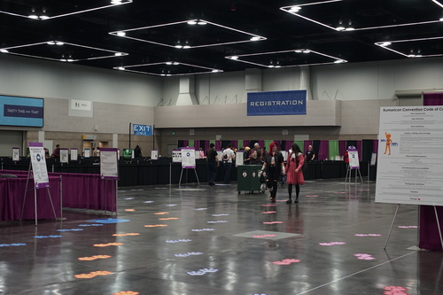Kumoricon is now pushing itself as a ribbon convention. There were a few official ribbons such as "day 0 attendee". Many attendees at the con are handing them out as well! I saw a staff member who had binder clipped rolls of ribbons hanging off his badge.
The Oregon Convention Center has a really cool feature: two spires, one with a massive Foucalt pendulum!
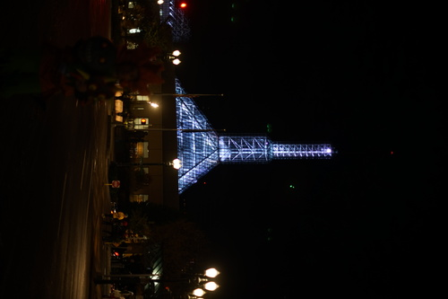 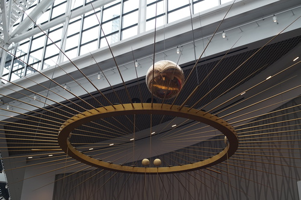 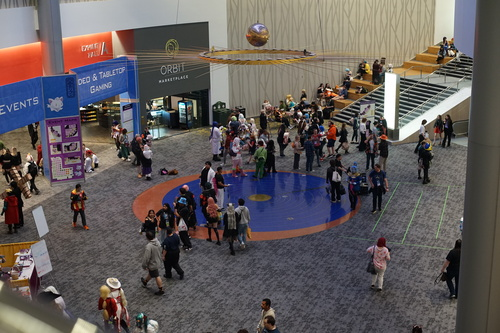Kumoricon hasn't grown into the convention center fully. There were areas blocked off. I really wanted to explore but I was good.
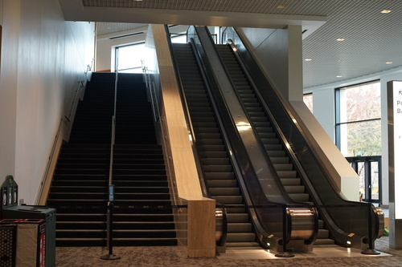There are plenty of water bottle filling stations around the convention center. I didn't look close enough to see if there were drinking fountains as well in these areas, but I highly recommend bringing a water bottle. The food options inside the convention center are very expensive. Think $12 for a (non-alcoholic) lemonade or a basic hot dog.
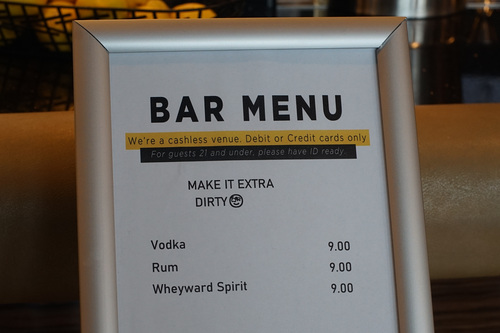For food options outside the con center, we ate twice at the Metropolitan Taven, located in the Eastlund Hotel. Their brussel sprouts were really good! There is a cafe and gift shop located in the Hyatt Regency. Kohi highly recommended their flatbread pizza.
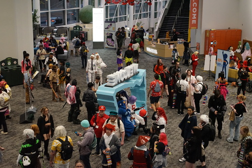Kumoricon has their exhibitors, Artist Alley, food trucks, autograph lines, art show and charity auction, all in one hall. This room was definitely the place to be.
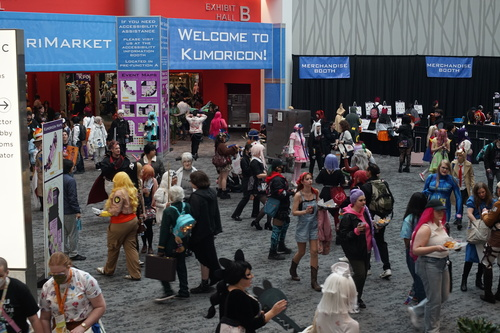What's the first thing you should do at any con? Buy out the Atelier Pierrot booth! I desperately needed a long sleeve blouse, but I also found a JSK I loved. Something about these drawstring bustled skirts makes my heart doki doki. I grabbed a headband neck accessory that I wanted to wear on my head anyway. The neck accessory didn't make it into the bag on our way out of the booth, but we noticed and ran back, where they were keeping it safe for us.
I wore it on Sunday! Don't worry, my mom has already yelled at me about the boots!
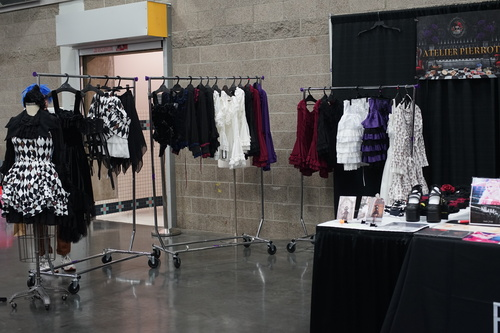The booth was pretty cleared out by then. This stuff goes fast!
The Fakestar booth was combined with the Atelier Pierrot booth. They had Kaya merch, that was mostly sold out by the time I got there! I even saw something for Schwarz Stein, but I didn't see what the item was. A little futher down the table were cheki from a few different bands. Linus and I did a little gambling. All cheki were $10 each, with the exception of Alice Nine and Miura Ayame which were $15. Their randomness depended on the group. Some allowed you to choose the cheki, choose the member, or choose nothing but the group. Jiluka was a completely random draw.
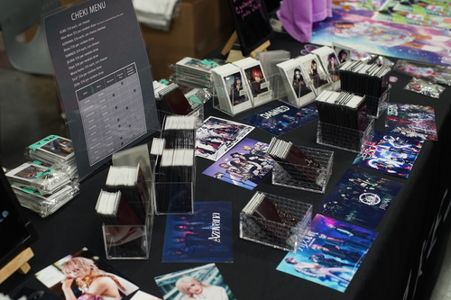The booth girl was willing to do a pull herself to try to get your favorite. I asked her to pull Boogie or Sena from the Jiluka stack. She pulled me a most beautiful Boogie!! The next day, we went back and I was feeling a little sad I didn't have a Sena. Linus said we'd get 3?! She pulled a very good Sena first. We then got a Ricko and a less good Sena. Well, now I'm sad I don't have a Zyean to complete the band! We called it quits though and ended our gambling streak at 4 cheki.
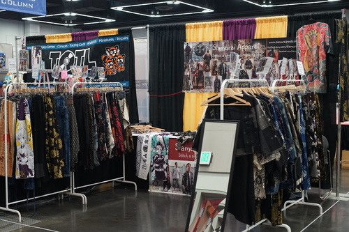There was a clothes maker called Siamurai Apparel in the dealer's hall, which I really liked! I don't think I'd be able to pull off their clothes myself, but I think one of my male dolls would look particularly cute in these designs. Men and handsome women, please check them out!
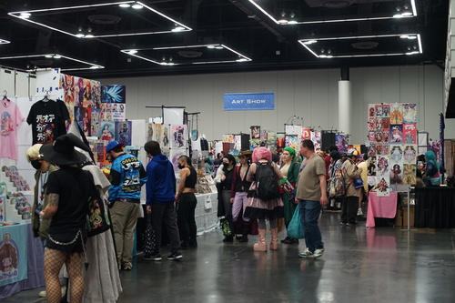I had a lot of luck in the AA this year! Kumoricon uses a jury system to choose from their applicants. This created a great variety of booths. A lot of cons I've been to this year have had a number of booths that sold nearly the same items and that was not the case at Kumoricon. Thank you to the jury for excellent curation!
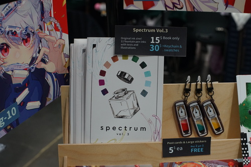My favorite booth was Dagneo. She's a Portland based artist who is even more obsessed with foutain pens than I am! I found her while searching through the Twitter hashtag for Kumoricon and was shocked to see a zine of fountain pen ink paintings! I don't buy fan work, but she had some very cute little 13 Sentinels keychains that tempted me. How often do you get to see Best Girl Tomi?! Linus and I went back to say hi so many times I was embarrassed for showing up so much.
Beet was another of my favorite booths. She was very passionate about her series "Cross of Corinthia"! She had the cutest scrapbook at her table of her characters for people to flip through. Beet, if you're reading this, scan and print your little scrapbook! We want to buy it!
Whispwill had some gorgeous prints! Linus bought this lovely monochromatic demon girl. I absolutely loved the composition of this print, but unfortunately it was a Genshin Impact character. I'll be keeping an eye on this artist!
HanaeKariko was selling t-shirts and prints with designs I loved. I think her hydrangea fox girl and winged bird girl designs are very lovely! And how could I not fall for the doggie boy with baguettes?!
Dragonlight had incredibly detailed ink drawings. She had originals for sale as well. It was a treat to see her work after struggling through a very dip pen filled Inktober.
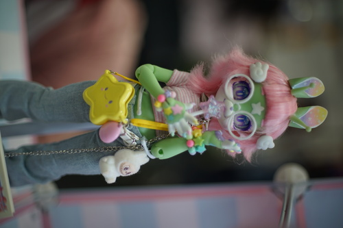Rap1993 was also attending and she let me take a photo of her doll she had on display at her booth. I did ask about the Labubu and it's from Aliexpress.
Some sales trends I noticed were photocard sized art, tiny tiny charms, fake mini CD cases. I want to make all of these things now!
I had one complaint with the Kumoricon AA: the aisles were very crowded and it looked like the artists had an excess of space behind them. I know the artists do need space, but I wish they got just a tad less to add more to the aisles.
There was a blocked off area of the sales hall for the art show and charity auction. I read photographs were not allowed, but didn't actually see any signs when I got in there. The auctions were silent and lots of the bidders on the sheets ignored the minimum bid.
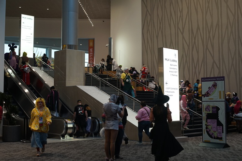I have a few friends and acquaintances who love Vtubers, so I always go check out the Offkai Expo booth! My good friend Frisk always pulls me off screen when I'm there. He's definitely not keeping an eye on me in this photo...
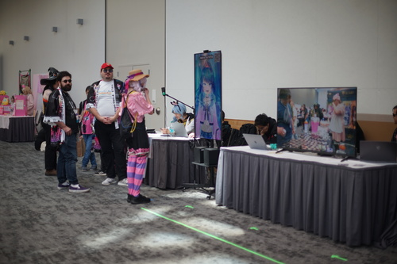The ChibiChibiCon booth was there and ready to give us buttons for listening to their spiel! I listened a few times and got a few can badges of their mascot!
We always stop by Sakuracon booths to ask about our boy Mizuki. The booth was not able to tell me who is the Mizuki artist, but confirmed to me the art for 2026 is made by the same artist as 2025 and there are more from this artist and they were all commissioned at the same time. Boy would I love to have a look in that folder...
Everyone at the Resin Rose booth was lovely! They told me about how interesting it is to have divorced couple Cocoriang and Kumukuku both as guests at their convention at the same time. I loved seeing the mix of classic and new dolls that were on display at their booth. These photos were taken on Friday and Sunday. I arrived too late on Saturday to see the table.
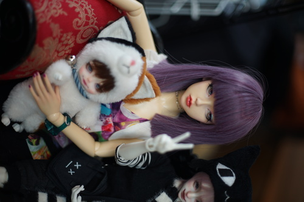 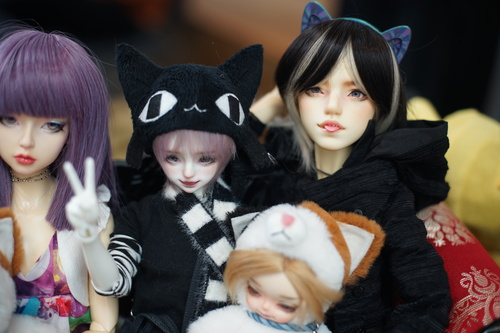 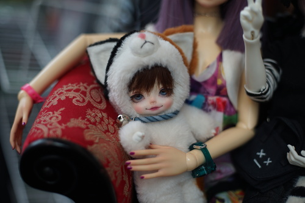 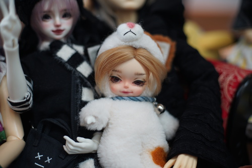 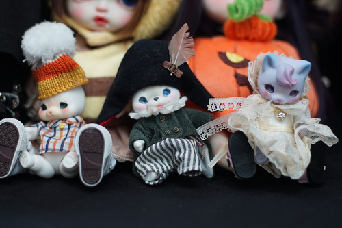 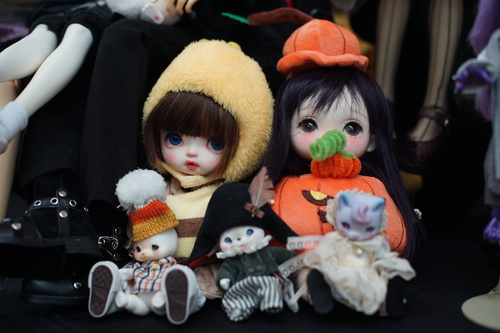 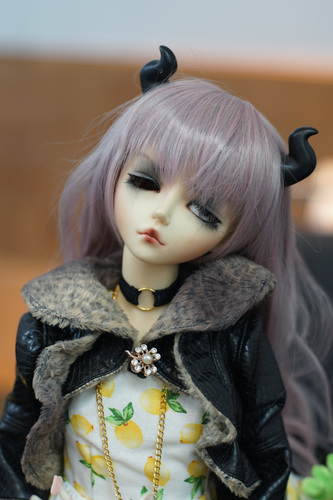
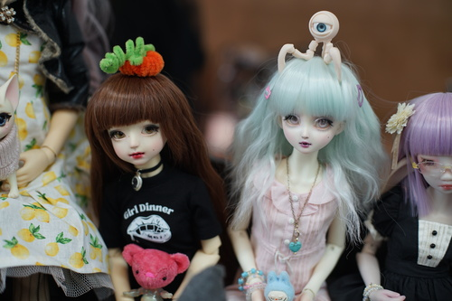
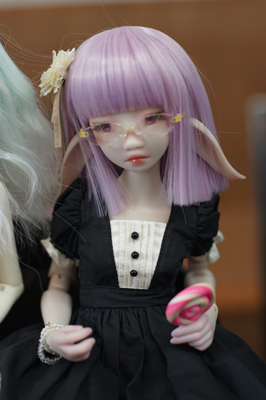
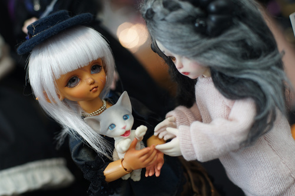
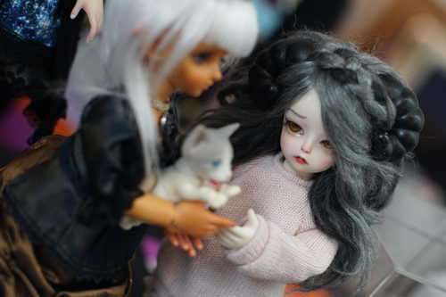
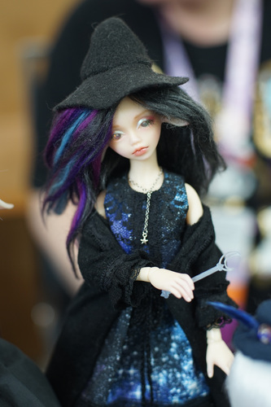
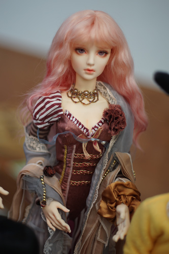
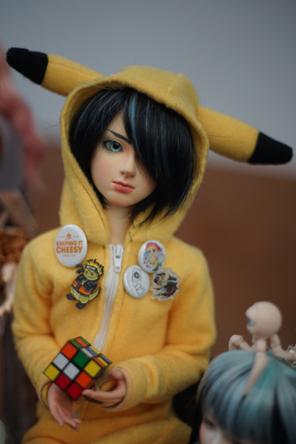
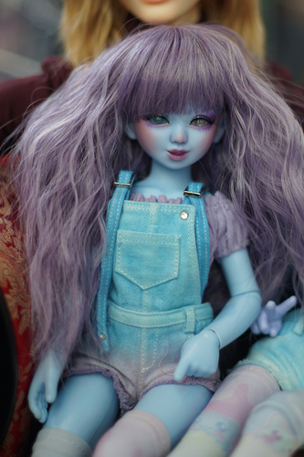
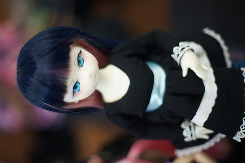
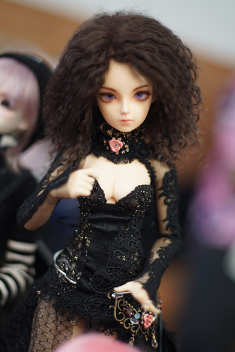
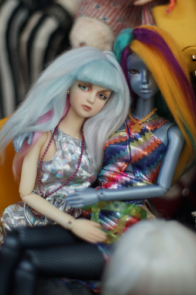
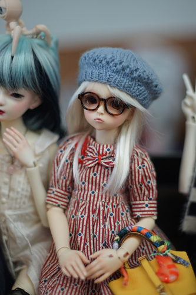
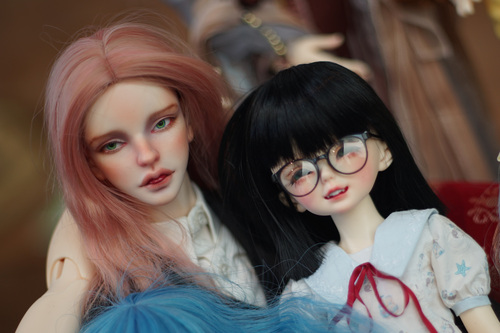
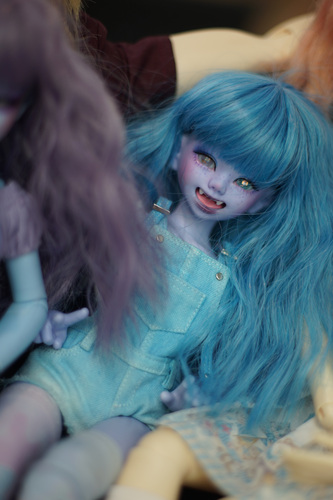
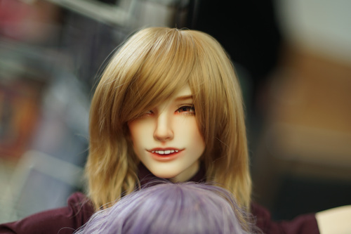
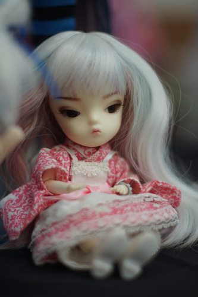
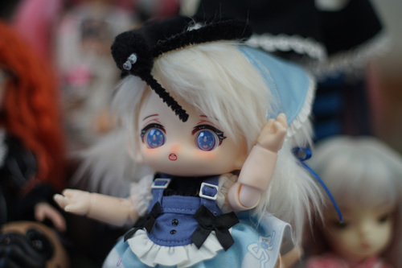
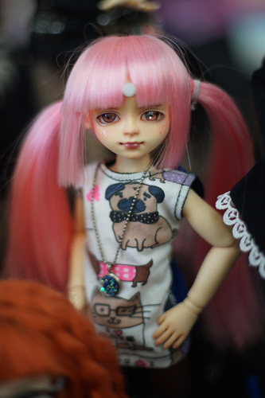
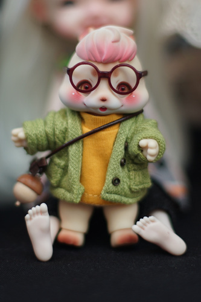
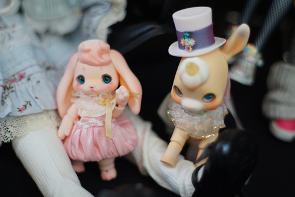
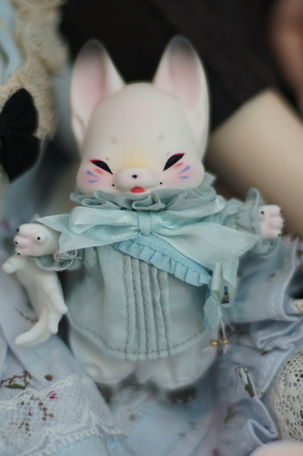
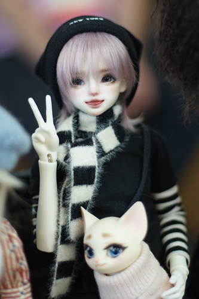
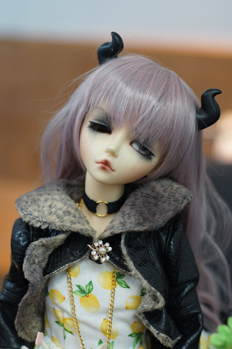
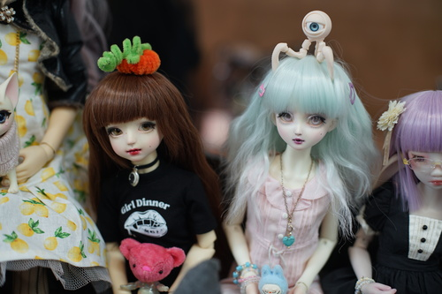
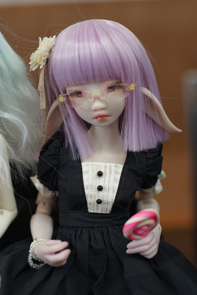
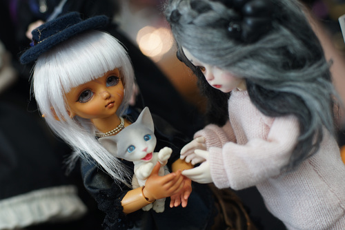
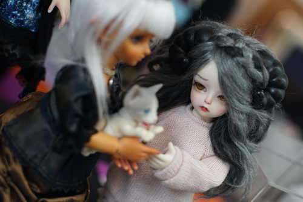
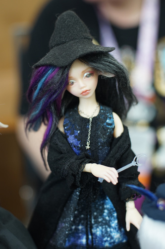
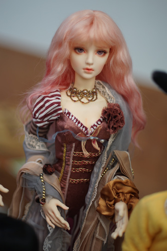
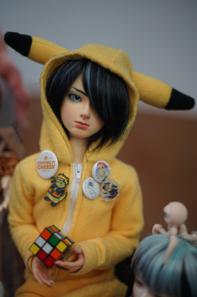
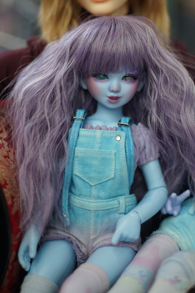
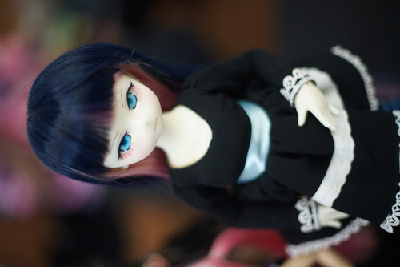
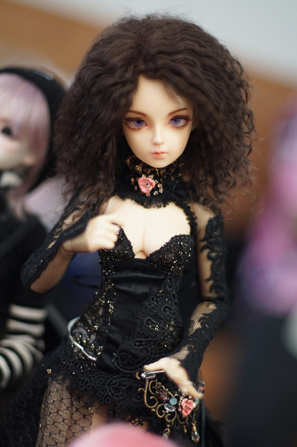
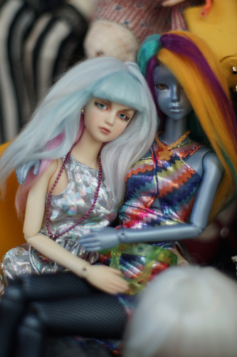
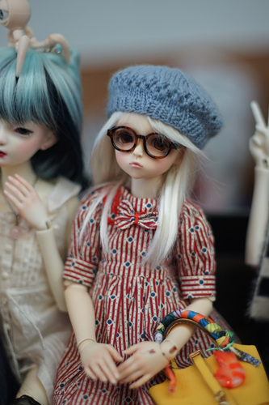
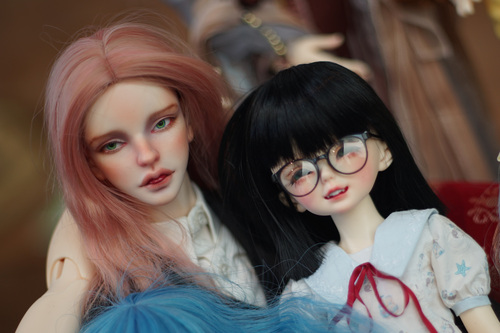
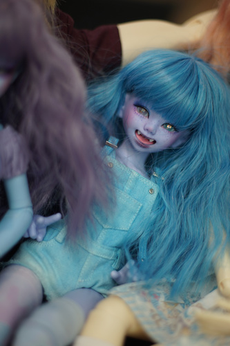
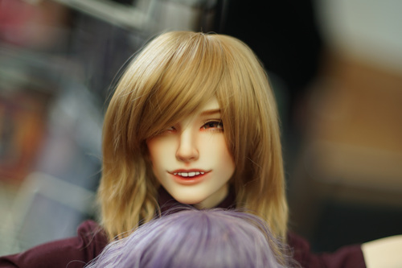
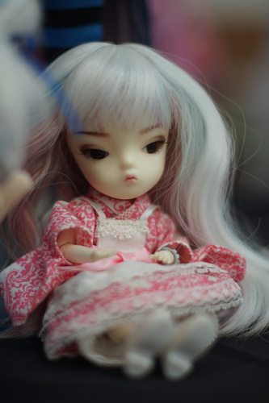
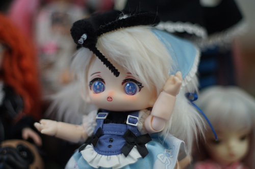
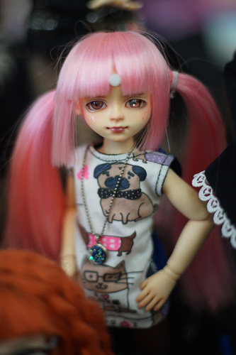
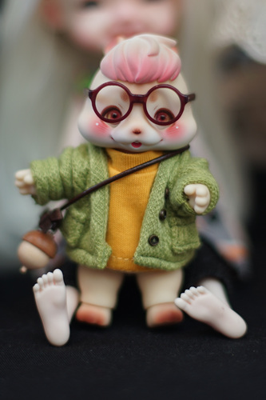
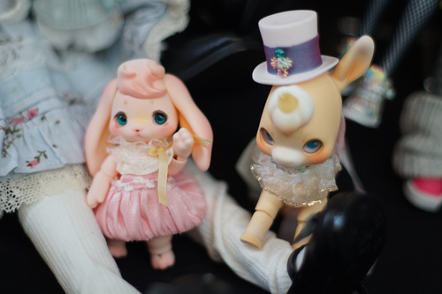
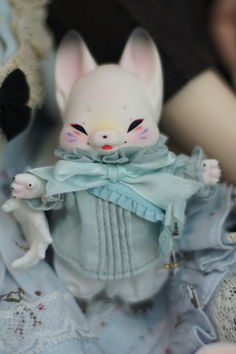
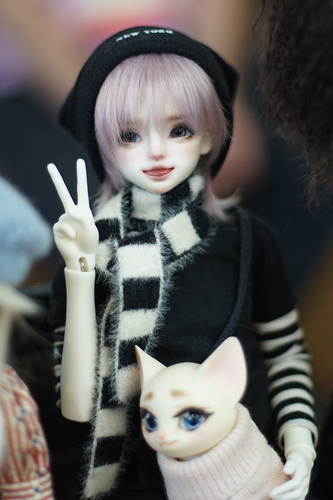
I love the little Cocoriang/Kumukuku animals so much. I want one but I also have no idea what I would do with it!! I'll stay strong.
I had made a post on Den of Angels asking about a doll meetup at Kumoricon and got a response from a doller working at the Resin Rose booth. Almost all doll meetups are now organized over Discord, so a person who rejects Discord (me), will be completely out of the loop. I was told it was Saturday at 3, after being moved from 2 due to the organizer going to a different meetup, and no location. I'm really disappointed with the meetup organization skills of the Discord dollers.
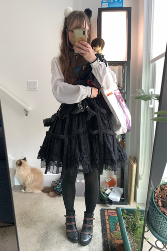I carried Cheby around on Friday and Saturday and he was the only resin doll I saw outside of the Resin Rose booth and Rap1993's AA booth. I have no other doller activities to report.
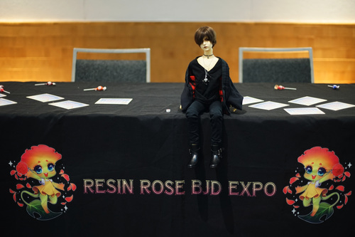I, being incredibly popular and famous, am always invited to many parties at every con! I must be choosy though because there are just too many to attend.
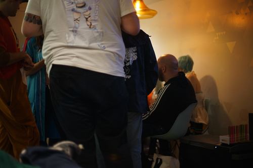On Friday night, I went to the Umamusume pre-party. I was just hanging out when someone from the couch said "Fran Hat?!" to me! It was my buddy Ginko!! I haven't seen him since AX 2017! He told me all about his favorite Vtuber, Marimari.
For some reason, there was a party in the shower room. And Teezy was in the bathtub?!
KCP kicked me out, so our night there ended early at 12 AM.
On Saturday, I attended the Umamusume party! I don't know anything about horses so I'm not sure why they let me in. Everyone was wearing horse tails.
Here is Kohi cosplaying Tamomo Cross from Umamusume! For the first time ever, she was shorter than me because she was in flats and I was in heels.
Advertising opportunity?
Here is our favorite bartender, Menchi, hard at work!
I ended up leaving early and heading back to the con center. There was party drama after I left, but instead of drama, you will soon read about my time at the FF14 art party panel!
Linus wanted to sit down, so the first panel we attended was "Monster Buddies" in the Chibi Room. They wanted me to make something scary for Halloween so I did my best!

My monster releases pollen that will make you sneeze for 5 days straight. Very scary!
We wanted to sit down a little later and decided to go to the Iron Cosplay panel. This was a quick game show where 3 teams of 4 members of the audience have 5 minutes to make a cosplay to a prompt on the model out of the materials provided. The secret to winning this fast paced contest is have your model and team member explaining the design be your most charismatic members, with the explaining member being more important than the model.
I usually do not attend panels focused on yaoi or other porn, but I found one titled "A Brief History of CLAMP Yaoi" and was aimed at all ages, so we decided to give it a try. The panelist wearing a Jojo cosplay seemed to discuss a lot about Jojo, but I did get an overview of CLAMP works! I haven't studied them much yet.
We attended Maullar's "not legal advice" panel where I believe he advised us to sue teezan??
After I left the Umamusume party, Linus and I decided to try the "Art Thou Joking?" panel. The two panelists had set up a tablet on stage to show them drawing an audience member volunteer in selfie mode. The audience kept screaming "pop quiz!" and running to the front. The panelists explained it later, so this must be a panel that has been going for a few years. We didn't find it particularly enjoyable, so we left the panel.
Just 2 rooms away was a panel called "Warriors of Light, Queue for Art Party, Halloween Weekend!" where we peeked in and saw a huge room of people drawing. We went inside and peeked at the drawings. There were a lot of people drawing various cartoon characters, so we got in line for an unknown destination and another attendee explained the panel was to draw art of other people's FF14 characters. There was a number of catboys in the pool of characters available! Sign me up!!
Linus and I grabbed paper and pencils and got to work! For some reason, the only erasers supplied were on the back of a few pencils, which I think was a big oversight. Or maybe my oversight was not bringing my own drawing tools? There also weren't enough chairs so we ended up kneeling at the table on the floor.
Other attendees were handing out stickers and photocards of their characters. I was in heaven!!!
I left the catboy I drew in the last panel, named "MINECRAFT", on the table. I hope someone took him home and is enjoying him and his terrible life outlook!
Everyone went up to grab their gift art at the end before leaving. This was my favorite panel of the con and I will be looking for one at Sakuracon!
I haven't been heavily invested in cosplay in a few years, but I noticed everyone all showed up as Miku at the same time?! It was incredible!
First up is Stan, cosplaying fujoshi Miku. He blessed me with so many great poses!
He found the Black Butler doujin in the dealer's hall. It was questionable, but not bad enough to have to hide in a bag.
And Bear, cosplaying midwestern emo Miku.
And Tae, as Michael Myers Miku! The mask on the side of Tae's head freaked everyone out consistently.

Our group shot, from left to right, is Jeremy (Patrick Bateman Miku), Aria (Scream Miku), Stan (fujoshi Miku), Rokotori (Costco Miku), Tae (Miku Myers), Jorts (Halloween Miku), Eike (lab Miku), Bear (midwestern emo Miku). A few more Mikus came and went during this Miku meetup!
My favorite was Rec's Terrifier Miku. I took another picture of Rec, which I was asked not to post ;_; It was my best shot of the con, too!
And here's my Alice cosplay for the curious! It's 11 years old now?! What?! That's as old as she is! I chose not to wear the hanging bow this con due to rain. I'll admit, it made life a lot more comfortable.
Kumoricon has a combined game room. There are arcade machines and console games to check out on one side and tables for tabletop gaming on the other.
My favorite find in here was Teezan! My second favorite was the pile of touhou fumos!

I had put one of my cards in my itabag with a con rules compliant note (solicitation isn't allowed) but no one approached me with mutual love of artist trading cards.
Here are the results of the artist trading card trade that everyone was waiting for! No one was prepared with cards, but 3 people traded me with drawings they made on site.
Jorts and Eike drew Alice for me and Tae drew Tenma! Thank you all so much! I will keep these precious drawings safe forever! I hope to see more artists joining in on the fun next time.
I'm going to try to carry a few of these with me in the future, so if you see me and want to trade, I want to trade! If you just want to print them, the dimensions of this image should be about 7.5x10.5 inches ;3

Mostly paper items. Highlights are the vtuber card drawn by Maullar, Spectrum Vol 3 zine by Dagneo, and a bat shaped popsocket from Atelier Pierrot.
Badge ribbons, photocards, Jiluka cheki, and so many stickers!
I forgot this one, oops ;_;
A camping themed gift bag from Kohi, Devola and Popola keychains, can badges, a small glass mushroom from a Reimu cosplayer, squishy hedgehog and piggy from the cat ear making booth.
This con was super fun! We didn't get to funmax as hard due to not having a hotel room, but we still had a great time.
Kumoricon is still on the smaller side. I don't feel like it was as large as my first Sakuracon in 2012, but it has grown significantly since Kumoricon 2011. It wasn't crowded, but had enough activities to justify a whole weekend. The artist alley was curated better than any convention I've been to. Kumoricon is big enough to attract a few big names as guests, yet small enough you can still wander around and come across your friends on accident.
My suggestions are to bring some snacks, a waterbottle, and an eraser! And don't forget your artist trading cards!
For my finale, Kohi in her jirai coord holding Ryan's denim jacket. Rest in Peace (at home), Ryan!